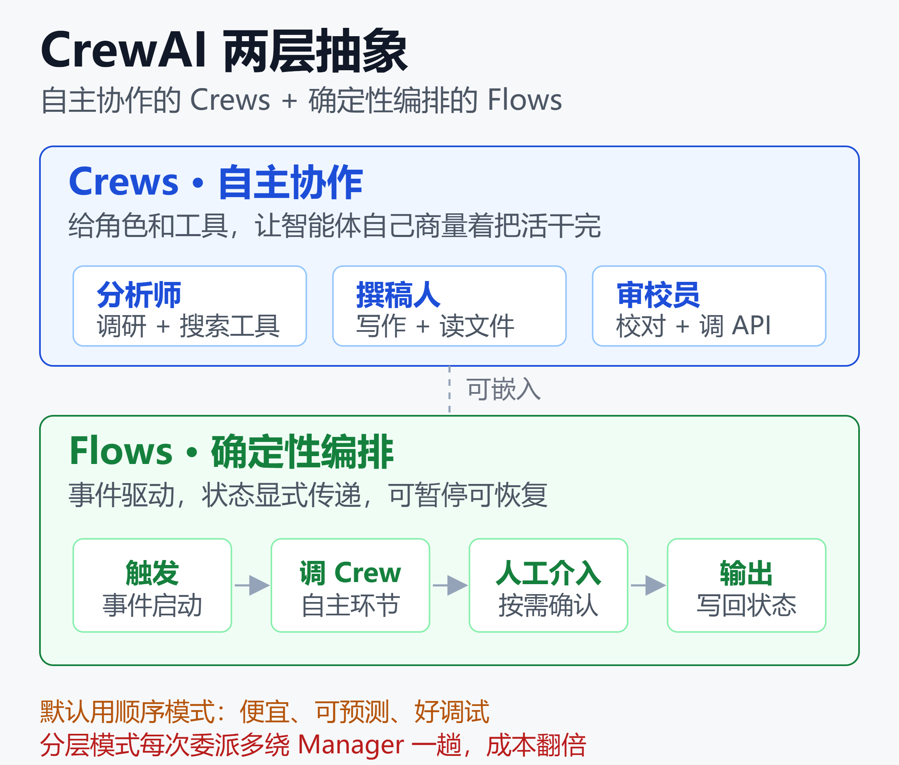

CrewAI 深度拆解：5.8 万 Star 背后，Crews 与 Flows 的能力边界和生产代价
一个 2023 年底才开源的巴西项目，如今在 GitHub 上攒下约 5.8 万颗星，官方称每月跑着超过 4.5 亿次智能体工作流，还宣称约 60% 的财富 500 强在用它。
它叫 CrewAI，一个不依赖 LangChain、完全从零写起的多智能体 Python 框架。它的卖点很直白：与其让一个大模型硬扛所有任务，不如组一支「AI 员工团队」，每个 Agent 有自己的角色和工具，像公司里分工协作那样把复杂任务拆开做。
但热度和「能上生产」是两回事。这篇文章把 CrewAI 拆开讲：它的两层抽象 Crews 和 Flows 各自解决什么问题、两种执行模式怎么选、真实生产里最容易踩的坑在哪、和 LangGraph / AutoGen 怎么比，以及国内团队关心的国产模型接入。
一、CrewAI 到底是什么
CrewAI 有一个容易被忽略的事实：从 1.x 版本起，它不从 LangChain 导入任何东西，自己实现工具抽象，模型调用统一走 LiteLLM 这个网关层。所以它是一个和 LangChain 平级的独立框架，不是 LangChain 的一种用法。
它的核心概念不多，理解四个就够：
- 角色（role）：这个 Agent 是谁，比如「资深行业分析师」。
- 目标（goal）：它要达成什么。
- 背景故事（backstory）：给模型的人设上下文，影响它的语气和判断。
- 工具（tools）：它能调用的能力，比如搜索、读文件、调 API。
多个 Agent 组成一个 Crew（团队），每个 Agent 领若干 Task（任务），任务之间可以传递产出，形成工作流。这套「角色 + 目标 + 工具」的建模方式上手极快，是它能快速起量的主要原因。
二、两层抽象：Crews 与 Flows
CrewAI 真正值得说的设计，是它把编排分成了两层，分别对应两种截然不同的需求。

如上图，上层是自主协作的 Crews，下层是确定性编排的 Flows，两者可以组合使用。下面分开讲。
Crews：自主协作
Crews 是它最初的产品形态，强调「涌现式」协作。你给每个 Agent 定好角色和工具，把任务丢进去，让它们自己商量着把活干完。适合探索性、边界不清晰的任务，比如做一份调研、写一篇分析报告。
它的好处是写得少、跑得快，几十行代码就能拉起一支能干活的团队。代价是过程不完全可控，同样的输入可能走出不同的执行路径。
Flows：确定性编排
Flows 是后来补上的一层，用来解决「我要精确控制流程」的场景。它是事件驱动的：用装饰器声明某一步在什么事件后触发，状态在步骤间显式传递，还支持人工介入（HITL）和从检查点恢复。
Flows 里可以嵌 Crew，也可以只写普通代码逻辑。换句话说，确定性的骨架用 Flows 搭，需要「自由发挥」的环节再交给 Crew。这种「确定性外壳 + 自主内核」的组合，是 CrewAI 现在推荐的生产姿势。
三、顺序还是分层：一个决定成本的开关
在 Crew 层面，任务执行有两种 process，这个选择直接影响你的账单，必须搞清楚。
两种模式的本质区别
- 顺序（sequential）：谁先谁后，你在设计时就定死了。执行时按顺序走，前一个任务的产出喂给下一个。
- 分层（hierarchical）：引入一个 Manager Agent，由它在运行时决定把任务派给谁、按什么顺序做。
一句话概括：顺序模式是你替它决定，分层模式是让一个 Manager 大模型替它决定。
分层模式的隐藏代价
分层看起来更「智能」，但它有两个容易被低估的问题。
第一是成本。每个被委派的任务都要多绕 Manager 一趟，也就是多一次 LLM 往返。这一趟在顺序模式里是不存在的。有工程师直接警告：一个不起眼的 process 开关，可能让你的 Token 账单直接翻好几倍。
第二是它未必按文档那样工作。有一篇被广泛引用的分析指出，在真实工作流里，Manager 常常没能有效协调下属，最后退化成顺序执行，却还多付了协调的钱，并带来推理错误、无谓的工具调用和很高的延迟（来源见文末 Towards Data Science 分析）。
结论很实用：除非你真的需要运行时动态分配，否则默认用顺序模式。它更便宜、更可预测、更好调试。
四、生产环境的三个真实坑点
CrewAI 原型阶段的体验很好，但从原型到生产是另一道坎。整理社区反馈，最高频的问题有三个。
坑一：Token 成本跨 Agent 叠加
多 Agent 最反直觉的地方在于，Token 花费不是线性增长，而是跨 Agent 边界累积放大。每个 Agent 都带着自己的上下文、系统提示、历史去调模型，Agent 越多、传递越多，重复携带的上下文就越多。
有人给出过一个直观的量级估算：一个 5 Agent 的顺序 Crew，每次运行做 5 次串行 LLM 调用；按 GPT-4o 每次执行约 0.05 美元算，每天 1 万次就是约 500 美元的 API 账单，这还没算任何工具调用（来源见文末 Spheron 部署指南）。另有一篇审计把 CrewAI 默认模式的 Token 效率打了 43 分（满分 100）。
应对思路：能用小模型的环节别上大模型（模型路由）、控制每个 Agent 的上下文长度、给 Crew 设 Token 预算上限。
坑二：并发触发 429 限流
CrewAI 默认让每个 Agent 独立发起 API 调用。多个 Agent 并发时，来自 OpenAI 或 Anthropic 的 429 限流错误会迅速级联，导致工作流失败和重试浪费。
应对思路：给模型调用加限流和退避重试、把并发度压到供应商配额之内、或者接入一个统一的网关层（如 LiteLLM）做集中限流。
坑三：非顺序流程的调试成本
CrewAI 社区有一条长期活跃的讨论：一旦工作流不再是严格顺序的，调试就变得吃力。有团队反馈，与其和分层模式较劲，不如自己写一套编排循环，或者换成基于图的框架（如 LangGraph），反而少些调试。
这不是说 CrewAI 不能上生产，而是提醒你：它的优点是结构清晰、以顺序为主的流程；流程越动态、越需要分支和回环，它的优势就越少。
五、和 LangGraph、AutoGen 怎么比
2026 年做多智能体选型，绕不开这三个名字。先说一个前提变化：AutoGen 在 2025 年底进入维护模式，微软推荐迁移到 Microsoft Agent Framework。所以真正在为新生产系统做决策的，主要是 CrewAI 和 LangGraph。
三者的核心差异可以按「用什么模型来组织流程」来分：
| 框架 | 组织方式 | 优点 |
|---|---|---|
| CrewAI | 角色化团队 | 快速出原型 |
| LangGraph | 图状态机 | 生产可控性 |
| AutoGen | 会话式 | 已进维护期 |
行业里流传较广的共识大致是：CrewAI 是最快跑出一个能用 Agent 的方式，LangGraph 是你要发布到生产时更稳的选择。前者拿易用性换控制力，后者反过来。
如果你想深入 LangGraph 的图状态机原理，可以读LangGraph 深度解析：从状态图原理到 Klarna 8500 万用户的生产落地；想系统对比更多框架，可参考多智能体协作框架选型指南。
六、国内团队关心的：接国产模型
对国内使用者来说，一个好消息是 CrewAI 在 1.12 版本起原生支持了一批 OpenAI 兼容的模型提供方，包括 DeepSeek、Ollama、vLLM、OpenRouter、Cerebras，以及阿里的 Dashscope（通义）。
这意味着你不必再靠奇怪的适配层，就能把默认模型换成 DeepSeek 或本地部署的 Qwen。因为所有模型调用都经过 LiteLLM，切换供应商基本只是改配置的事。想了解这个网关层的更多细节，可以看LiteLLM AI 网关深度解析。
对成本敏感的团队，这条路很关键：用便宜的国产模型跑大部分 Agent，只在关键推理环节调用更强的模型，能把前面说的 Token 叠加问题压下去不少。
七、商业化：从框架到 AMP 平台
CrewAI 不只是个开源库，它背后是一家拿了 1800 万美元融资的公司（boldstart 领投的种子轮 + Insight Partners 领投的 A 轮，2024 年 10 月公布），创始人是巴西籍的 João Moura。
商业化的载体叫 AMP（Agent Management Platform），在开源框架之上加了可视化 Studio、托管部署、链路追踪和 Guardrails，还有面向私有化的 AMP Factory。定价上有一个免费档（每月 50 次工作流执行）和单独报价的企业版；原来 25 美元/月的 Professional 档在 2026 年 6 月已从公开定价里下架。
需要说明的是，「约 60% 财富 500 强在用」是官方口径，具体到是深度生产使用还是小范围试用，外部无法独立核实，看的时候留个心。
小结
CrewAI 的价值主张很清晰：用「角色化团队」这个直觉，把多智能体的门槛降到最低，几十行代码就能起一支能干活的 Crew。它的两层抽象里，Crews 负责自主协作，Flows 负责确定性编排，组合起来能覆盖不少场景。
但要上生产，你得认清它的边界：默认用顺序模式而非分层，盯紧跨 Agent 的 Token 叠加，处理好并发限流，并接受它在高度动态流程上不如图式框架好调。把它用在结构清晰、以顺序为主的自动化上，配合国产模型压成本，是目前性价比最高的姿势。
一句话：CrewAI 是最快让你跑起来的框架，但跑得久不久，取决于你有没有绕开上面这几个坑。
免责声明
本文基于公开资料整理，用于技术分析与信息分享，不构成任何投资、采购或技术选型建议。文中提及的融资金额、企业采用率、执行量等数据均来自公开来源与厂商口径，未经独立核实，可能随时间变化。请以官方最新信息为准。
参考来源
- CrewAI —— 官方 GitHub 仓库
- CrewAI —— 官方文档：Flows 概念
- CrewAI —— 官方文档：AMP 平台介绍
- CrewAI —— 官方文档：v1.12.0 更新日志
- Atlan —— CrewAI 架构、限制与上下文差距 2026
- Towards Data Science —— 为什么 CrewAI 的 Manager-Worker 架构会失灵
- Spheron —— 在 GPU 云上部署 CrewAI 生产多智能体指南
- markaicode —— CrewAI 429 限流的生产修复
- Insight Partners —— CrewAI 如何编排下一代 AI 智能体
- boldstart —— 宣布投资 CrewAI
- SiliconANGLE —— CrewAI 完成 1800 万美元融资
相关阅读
- LangGraph 深度解析：从状态图原理到 Klarna 8500 万用户的生产落地
- 多智能体协作框架选型指南
- MCP 与 A2A：AI Agent 协议深度对比
- LiteLLM AI 网关深度解析
- Agent 治理与可观测性的隐藏成本
推荐搭配装备
善其事，利其器。以下硬件能最大化你的AI体验👇
🔗 通过以上链接购买可支持本站持续运营 🙏